Doctor app · calling walkthrough (decisions to D-83, 2026-11-03)
A · Start and the call
Every case starts here. The doctor's phone rings first (leg 1), then the patient's (leg 2). An attempted call = the patient answered. Decided in D-83 (CW-A1 to A6).
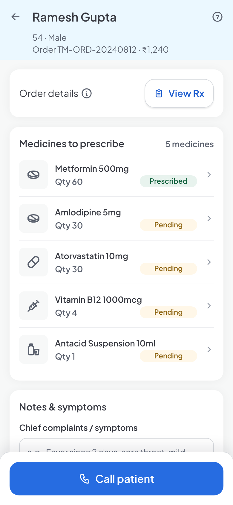
1 · Ready to callWhen Case opened. Order and medicines first; no script yet.Why / what Back → “Leave this case?”: Release case returns to Home; Stay goes back to Ready.
tap Call patient →
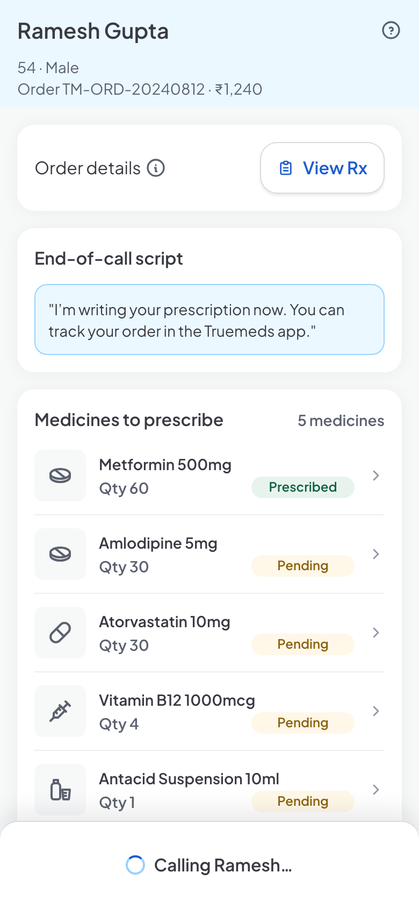
2 · CallingWhen Doctor tapped Call patient. Leg 1 rings the doctor, then leg 2 the patient.Why / what Status line “Calling {name}…” only, script shown. No Callback on a live call (CW-A1). No End call: the doctor ends on the phone.
Back before the patient answers →
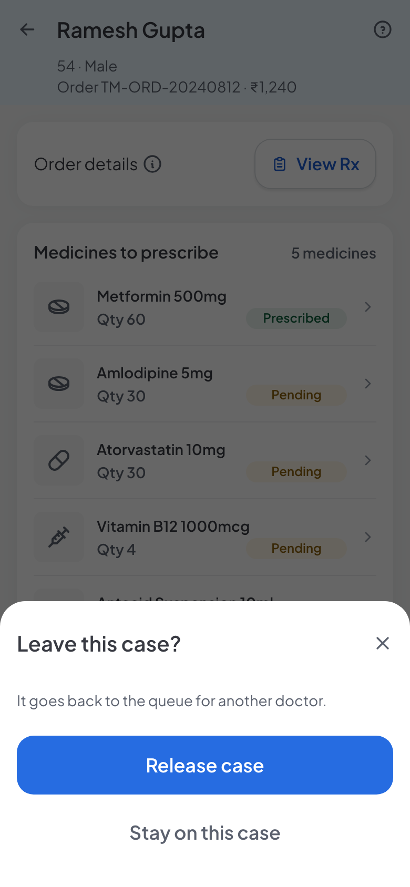
7e · Leave this case?When Back in 1, 3 and 4 only (D-80).Why / what Release case → Home (CW-A5).
B · When the call doesn't connect
Failures close cleanly; the doctor always has a next step. Doctor-side failures stay on 3 and 4; anything on the patient's side goes to 9 (CW-B1).
3 · Didn't go throughWhen Doctor-side request or network failure (leg 1, or the partner refused for a reason that isn't the patient's number).Why / what Red band. Call again. No Callback: the patient was never reached.
doctor didn't pick up →
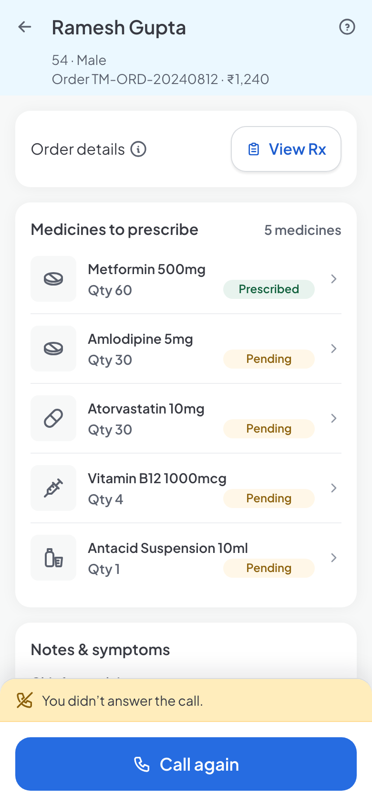
4 · You didn't answerWhen The doctor's own phone (leg 1) not answered, busy or rejected.Why / what Amber band. Call again.
patient side failed, any time →
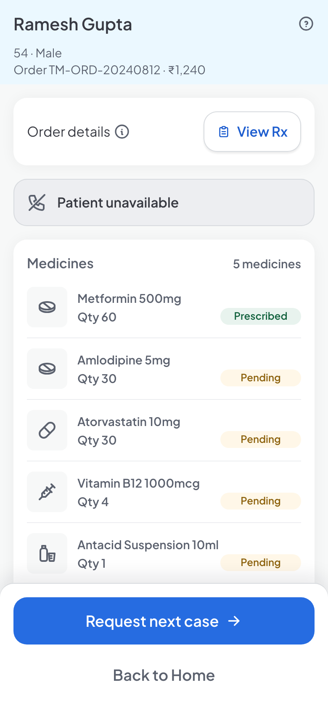
9 · Patient unavailable (automatic)When Leg 2 failed: no answer, busy, rejected, switched off, invalid number.Why / what Grey card. The case goes on hold and the system retries by hangup cause; an invalid number is not retried (CW-B2). Request next case · Back to Home.
C · After the call: the 50-second gate
The prescription needs a valid consultation: total talk time on the case at or above the gate (setting, today 50 s). Callback appears only after the call: on 6 and 7d (CW-A1, C3).
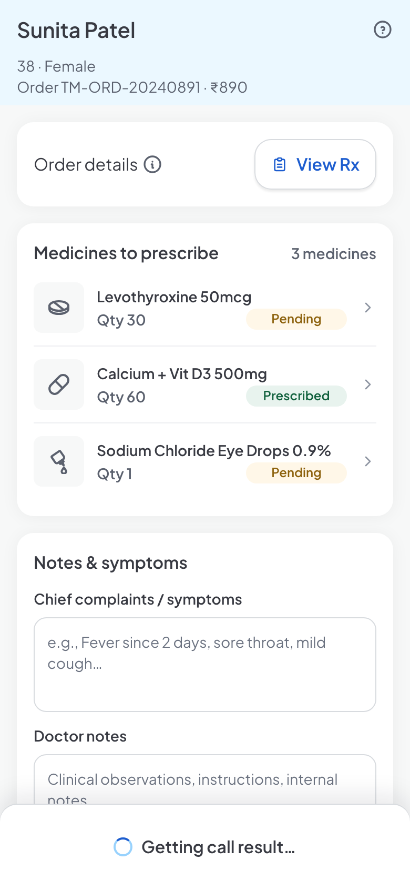
5 · Getting call resultWhen Pilot: the partner reported the hang-up; the result is not in yet (CW-C2).Why / what Status line only. No Callback (CW-C1). Cat4 never reaches 5: it stays on Calling until the result.
result under the gate →
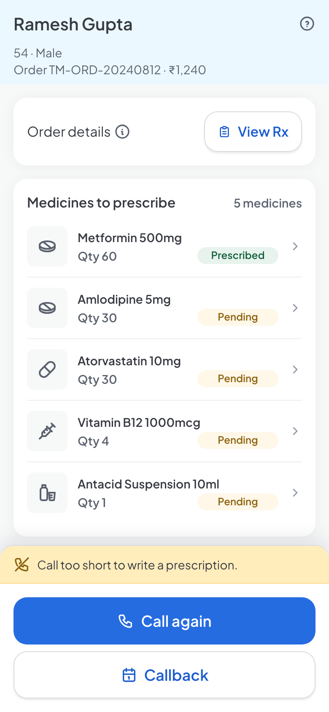
6 · Call too shortWhen Total talk time under the gate.Why / what Amber notice · Call again · Callback: the only post-call state with Callback besides 7d.
Callback →
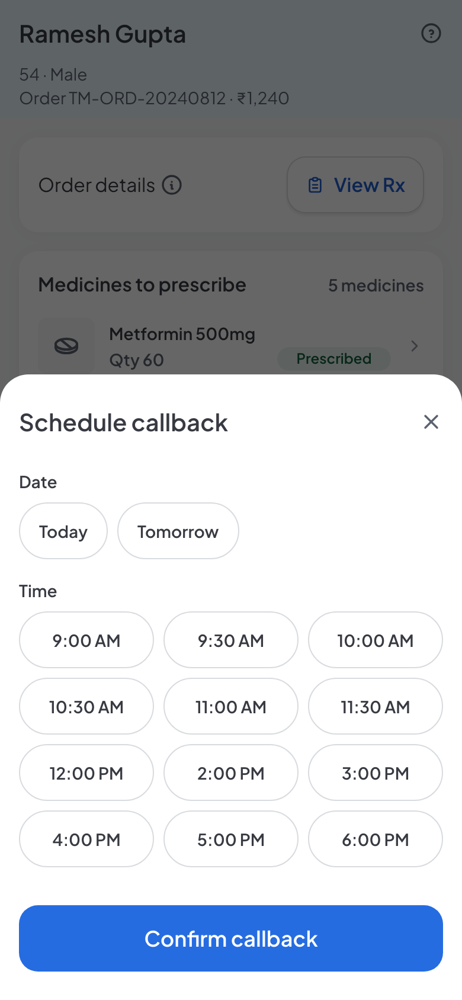
Schedule callbackWhen Opens over 6, not over Calling (CW-A1).Why / what Callback is judged by the call record (CW-A2).
backend refuses (no leg 2) →
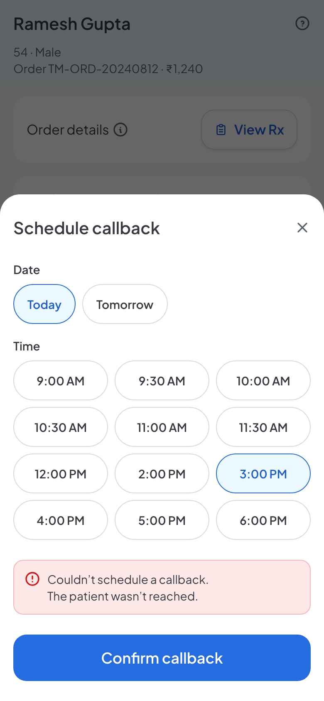
Callback refusedWhen The patient did not answer on this case (leg 2).Why / what Sheet error: “Couldn’t schedule a callback. The patient wasn’t reached.”
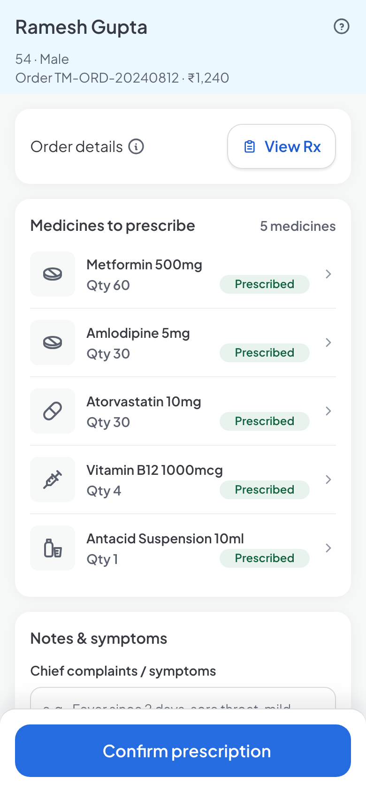
8a · Confirm prescriptionWhen Valid call, Cat4 or HA skipped.Why / what The only button is Confirm prescription (CW-C3).
a medicine still Pending →
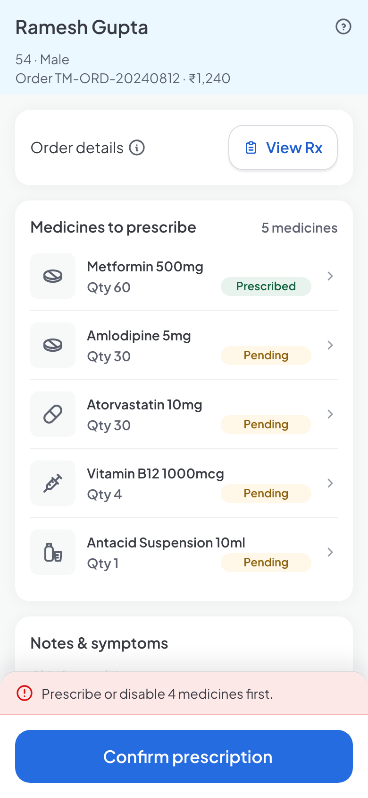
8c · Confirm blockedWhen Confirm tapped with a Pending medicine.Why / what Red band; the page scrolls to the first Pending one. No Callback.
valid, Pilot Non-Value Meds →
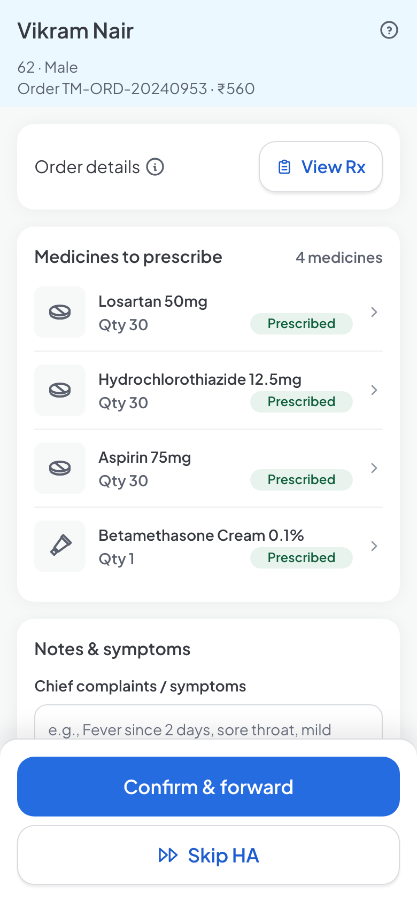
8b · Confirm & forwardWhen Valid call, Pilot Non-Value Meds.Why / what Confirm & forward · Skip HA full width. No Callback.
D · No call result (state 7)
Some partners only send the result after the call; if it never comes, the doctor isn't stuck, and an unproven confirm is not confirmed (CW-D1 to D4).
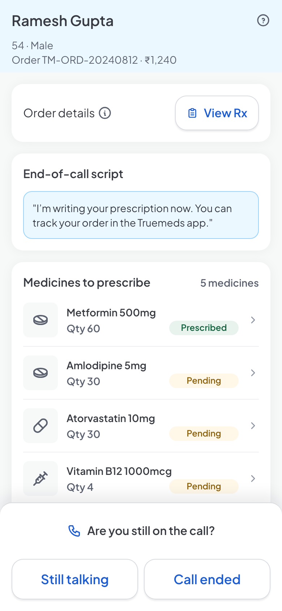
7b · Are you still on the call?When 3 min after the tap with no result, only when the end can't be known (CW-D1).Why / what Yes → back to Calling. Call ended → 7c.
No, call ended →
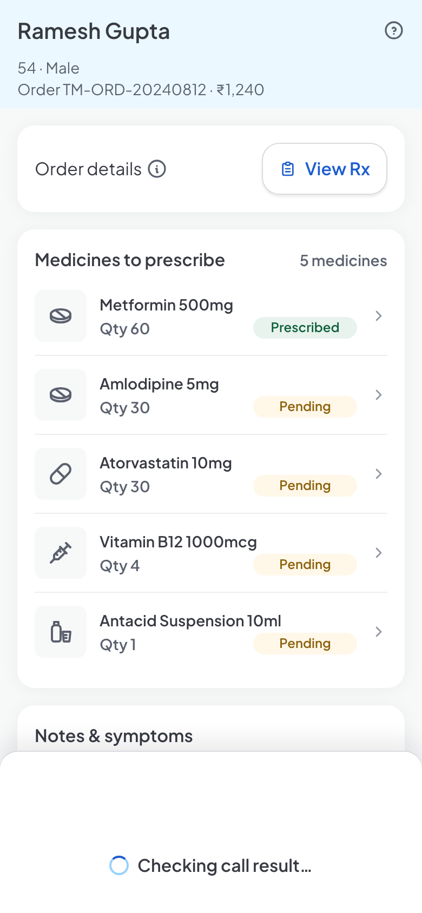
7c · Checking call resultWhen The doctor tapped “Call ended”, or the end is already known.Why / what Backend asks the partner for the record. Found → its normal outcome; nothing → 7d.
nothing found, Cat4 →
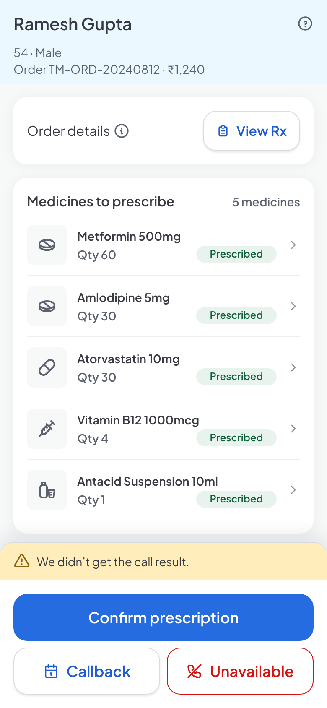
7d · Result not received (Cat4)When Backend check found nothing.Why / what Confirm prescription · Callback + Unavailable. No Skip HA (CW-D2).
Pilot with an HA call →
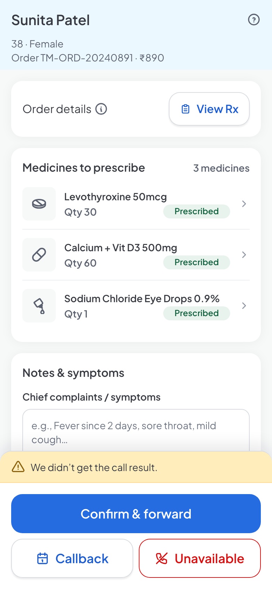
7d · Result not received (Pilot)When Pilot route, the call has ended.Why / what Confirm & forward · Callback + Unavailable (CW-D2).
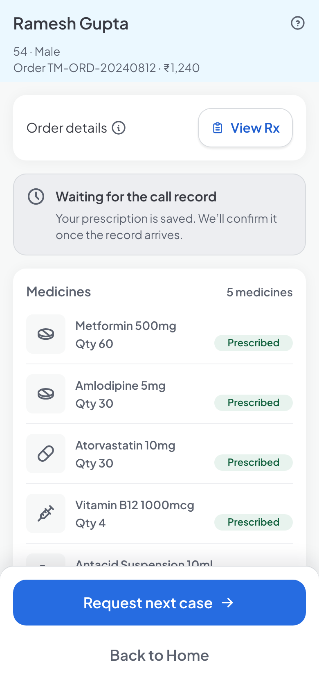
7f · Waiting for the call recordWhen The doctor confirmed in 7d.Why / what Grey card. Record over the gate → confirmed (Pilot: forwarded). Record under the gate, patient never answered, or no record after a wait → not confirmed → hold and retry. No Ops queue (CW-D3, D4, F2).
E · Transfer case (Pilot Value Meds, later version A)
One call: the doctor hands the patient to a Health Advisor (HA) on the same line. Launch uses flow F; the states below apply to both (CW-F1).
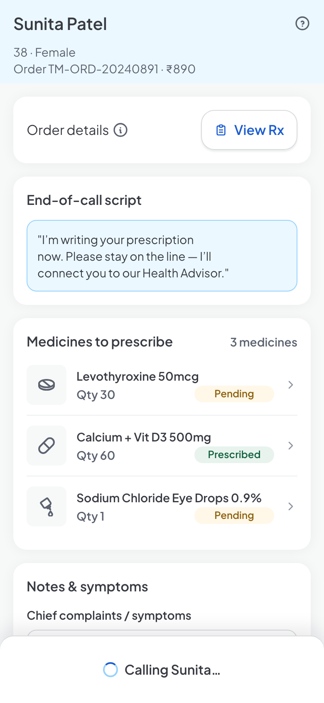
11 · Calling (transfer case)When Pilot Value Meds, one call, patient handed to an HA.Why / what Status line “Calling {name}…” only. No Callback (CW-A1).
gate time since the patient answered, call live →
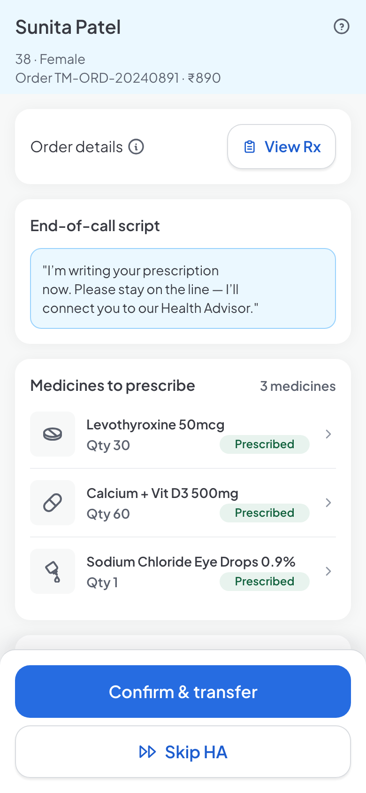
12 · Confirm & transferWhen Backend: gate time since the patient answered and the call is still live.Why / what Confirm & transfer · Skip HA full width. A last check on tap catches a call that ended in between (→ 16).
tap Confirm & transfer →
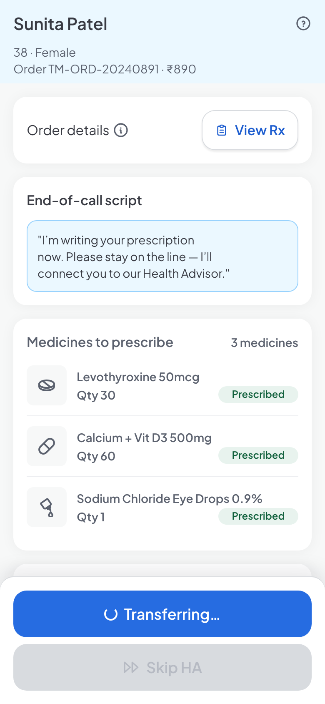
13 · Transferring…When The doctor tapped Confirm & transfer.Why / what Busy. Skip HA greyed and disabled (K13). No Callback.
HA's phone rings →
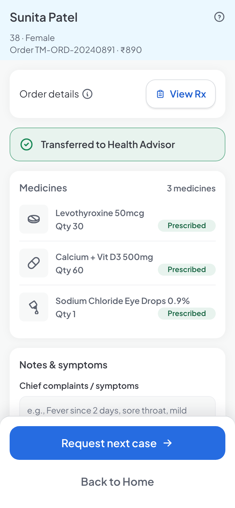
14 · Transferred to Health AdvisorWhen The doctor is dropped from the call automatically.Why / what Green card. Request next case · Back to Home. If the HA does not pick up, an agent calls the patient back.
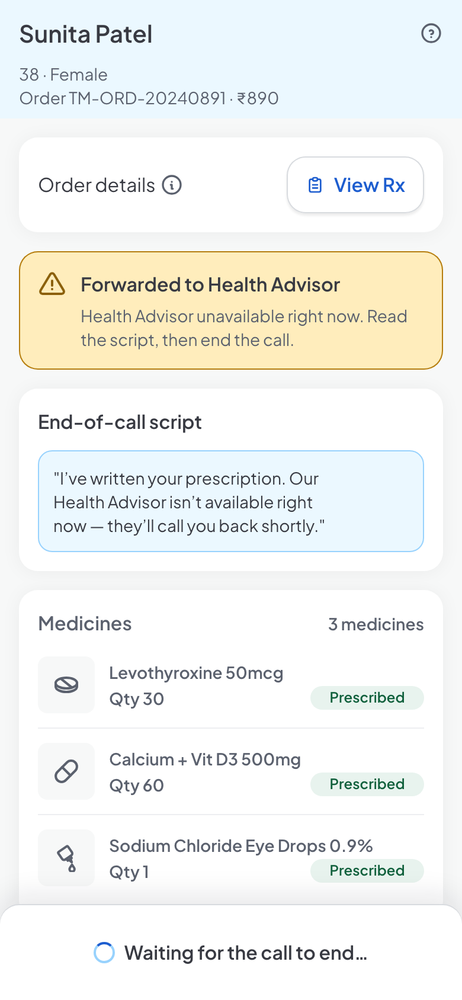
15 · Health Advisor unavailable (live)When The transfer couldn't start: no HA free, or the request failed. The doctor is still on the line (CW-E1).Why / what Amber card + script. Bar: “Waiting for the call to end…” only (CW-E3).
hang-up reported →
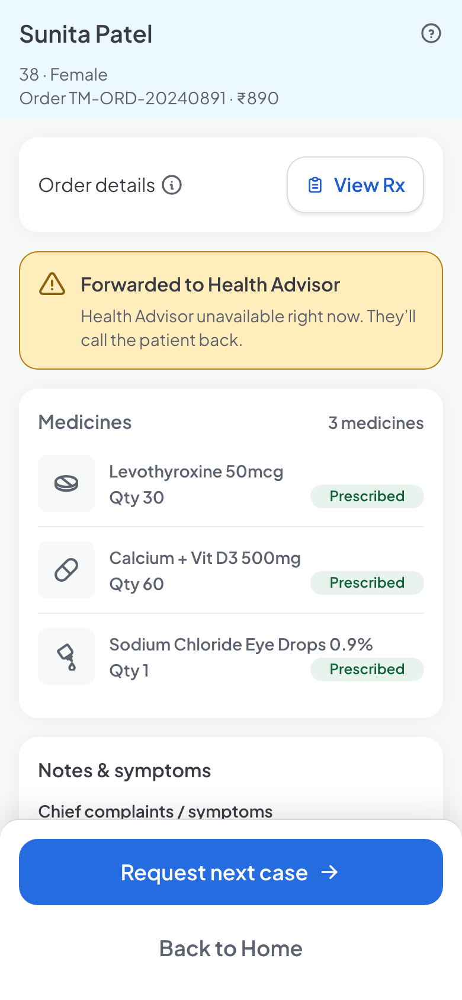
15 · After the hang-upWhen Call ended. No script.Why / what Card body: “Health Advisor unavailable right now. They’ll call the patient back.” Request next case · Back to Home.
call hung up before the transfer →
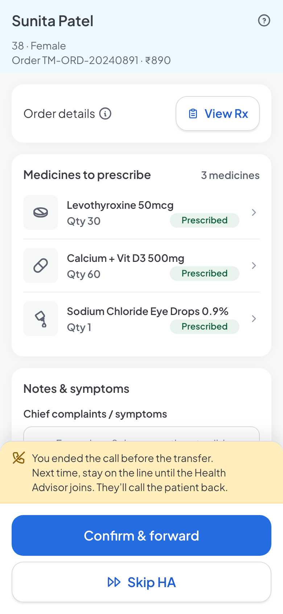
16 · Ended before the transferWhen Hung up after the gate, before the transfer (doctor / patient / unknown).Why / what Amber notice · Confirm & forward · Skip HA. No Callback (CW-A3).
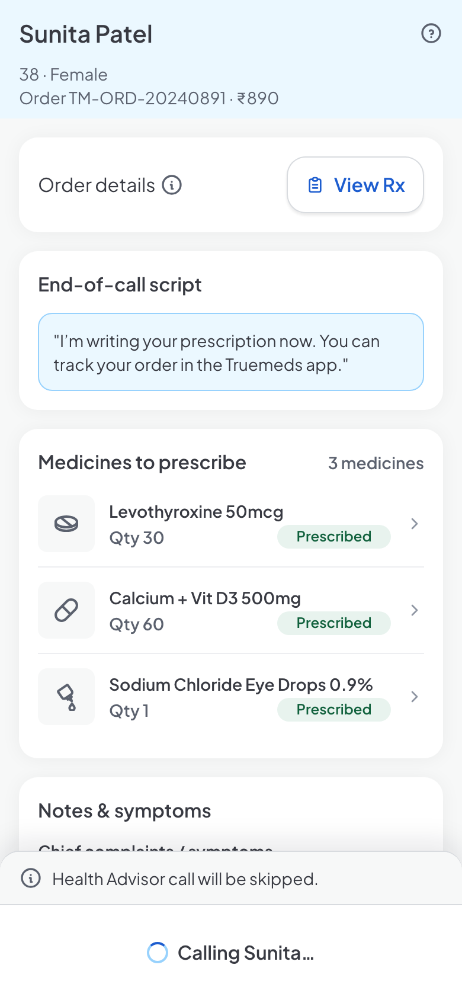
17 · Skip HA on a live callWhen Skip HA confirmed during the transfer call.Why / what Grey notice. “Calling {name}…” until the hang-up, then “Getting call result…”, then Confirm prescription (CW-E2).
Skip HA →
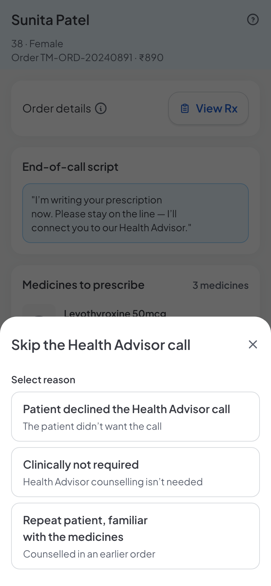
Skip HA reasonWhen Over 12 Confirm & transfer · Skip HA.Why / what Reason sheet; the bar behind it shows the same two buttons.
F · Fallback B: the Pilot launch flow (no HA reserved yet)
B ships first (CW-F1). The route is decided after Confirm; until HA reservation at call start exists (OQ-032).
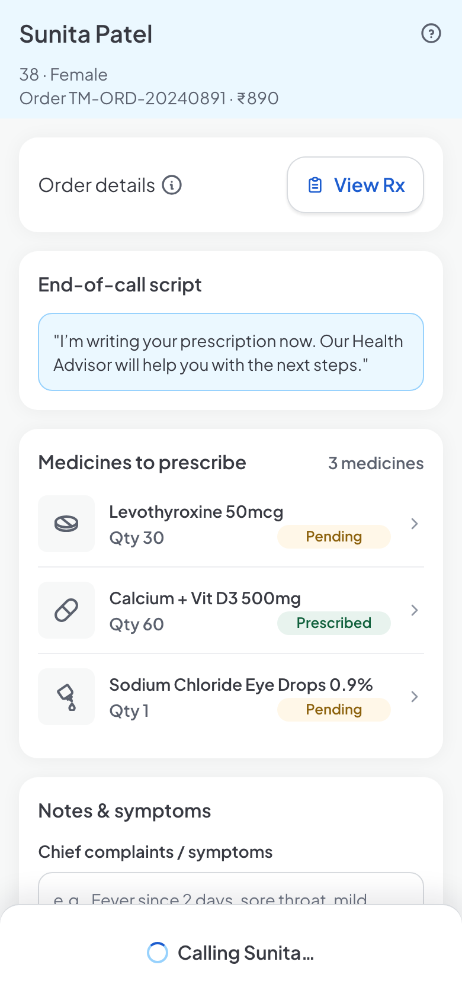
B1 · Calling, before the gateWhen Pilot live call (Ozonetel) before the gate.Why / what Neutral script. Status line “Calling {name}…” only. No Callback, no header Back.
gate passed, call live →
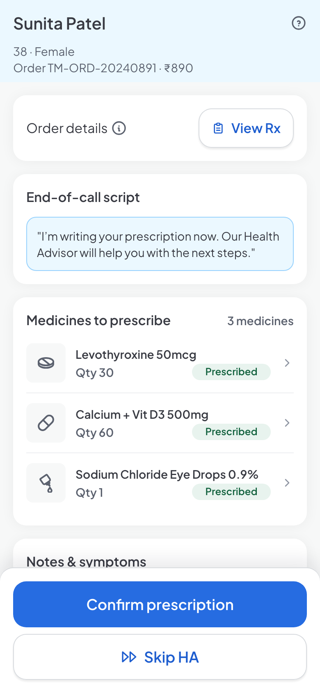
B1 · Confirm prescriptionWhen Gate passed since the patient answered, call live.Why / what Confirm prescription · Skip HA full width. No Callback.
Confirm →
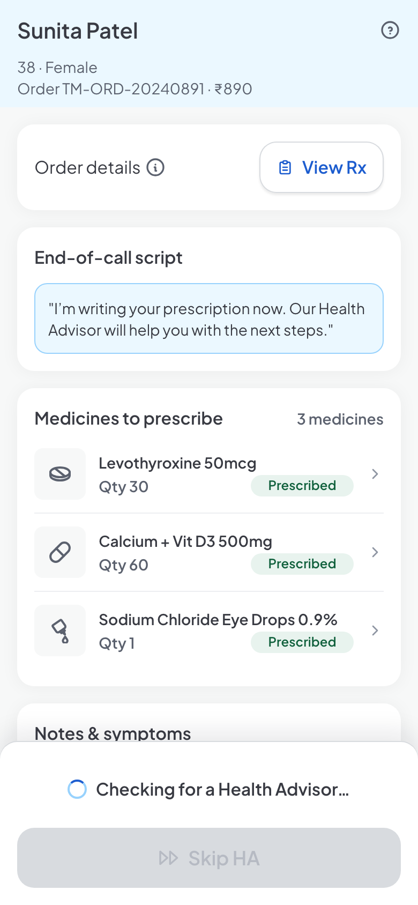
B2 · Checking for a Health Advisor…When After Confirm.Why / what Status line; Skip HA greyed and disabled. HA free → 13 → 14. None free → B3.
none free →
B3 · Forwarded, no HA free (live)When The doctor is still on the line.Why / what Amber card + script. Bar: “Waiting for the call to end…” only (CW-E3).
B3 · After the hang-upWhen Call ended. No script.Why / what Same card text as 15 after the hang-up. Request next case · Back to Home.
hung up after the gate, before Confirm →
16 · Ended after the gateWhen One doctor line for A and B (CW-F3): in B the HA joins only after Confirm.Why / what Amber notice · Confirm & forward · Skip HA.
Colours match the outcome cards: green done · grey neutral · amber act / warning · red error. Dashed arrows are checks on tap. Click the diagram to zoom. Fallback B (the launch flow) is section F of “Call flow”.
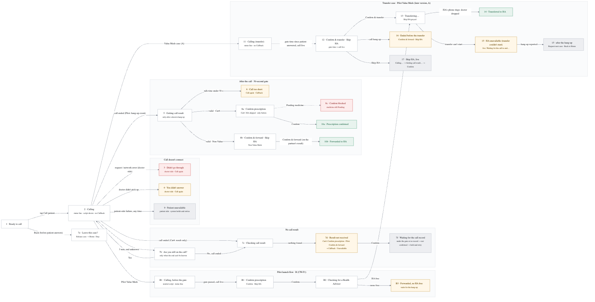
Telecom partners
One partner per flow. Knowlarity (Cat4): one result after the call ends, no live events. Ozonetel (Pilot): live events (doctor answered, patient answered, call finished, transfer). Whether Knowlarity sends a call-ended event is open (Engineering).
Attempted call
Leg 2 answered (the patient picked up). Before that, Back can release the case; after it, the case must be closed (confirm, Callback on 6 or 7d, or Unavailable).
50-second gate
Total talk time on the case at or above the gate (setting), adding up across calls on the same case (each at least ~10 s, within ~30 min). Confirm shows only when the backend says the call is valid.
How the app knows
Polling: the app asks the backend for call status (working assumption; Engineering confirms the interval, max call length and result wait).
Order types
Cat4: doctor call only → Confirm prescription. Pilot Value Meds: transfer to HA → Confirm & transfer (later version A; launch uses B). Pilot Non-Value Meds: HA calls later → Confirm & forward. HA skipped → Confirm prescription. Valid Rx: HA only, not in the doctor app.
End-of-call script
Shown from the tap on Call while a call may be live; hidden once the call has ended. Kept after a failed transfer (15) and B3, where the doctor is still on the line.
Callback
Only after the call, and only on 6 Call too short and 7d Result not received. The backend refuses a callback unless the patient answered (leg 2).
Unavailable
7d only (reason sheet, the case closes). A patient-side failure during the call goes to 9 automatically.
Patient unavailable (9)
Hold, not Ops: the system retries by hangup cause (busy, no answer, switched off, temporary network → retried after a gap; unknown cause → plain hold; invalid number → not retried, flagged for data cleanup).
Confirm rules
Every confirm button checks no medicine is Pending (Prescribed or Disabled). No double confirm: an unclear result keeps “Confirming…” while the app checks.
No call record
An unproven confirm is not confirmed: under the gate, patient never answered, or no record after a wait time (setting) → the case goes back through hold and retry. Nothing goes to Ops; no earnings for that case. Mismatches are logged for analytics.
Outcome cards
Green = done (confirmed, transferred, forwarded). Grey = neutral (patient unavailable, waiting for record). Amber = done but act (HA unavailable, B3).
Copy rule
Messages say what happened and what's safe; they never repeat a button on the screen.